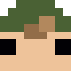
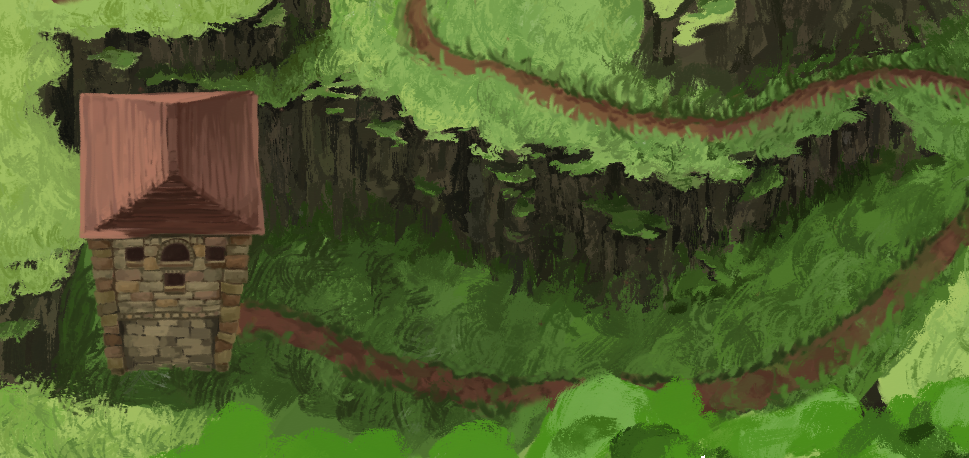
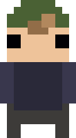
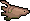
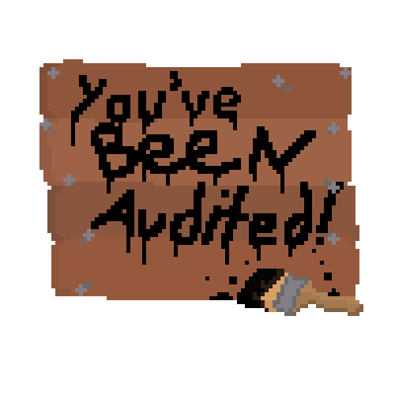
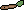
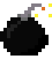

Jack Moyen's Portfolio

Hello! Name's Jack. Welcome to my portfolio, where I archive and store my
work, and display my projects, new and old!
work, and display my projects, new and old!
An upcoming turn-based, monster-catching RPG, The Untamed Wilds is an eldritch horror monster collector like no other. With an RPGMaker style, and hundreds of hand-drawn assets, and simple yet tactical combat, players will be challenged and immersed into the world of The Untamed Wilds.
A soldier on the island of Aminar, the player faces the harsh wilderness as they explore the island, working as a Guild emissary. Meeting dozens of detailed character and nearly a hundred questlines, players have hours upon hours of gameplay to look forward to.

Experienced in pixel art, many of my varied creations and animations can be found by clicking on the Stumpfish at Pixilart.com!
Carpaccio is a conceptual platformer detailing the sheer invasive nature of Carp, where the player controls carp after carp, desperately trying to invade every body of water on Earth, dodging obstacles and traps along the way.

You've Been Audited is a tax-evasion tower defense game where the player must defend their personal safe from invading IRS agents!

Chum is an alpha-stage fishing game inspired by "Ridiculous Fishing", in which the player must catch as many fish as possible, then upon returning to the surface, shoot the fish that are launched into the sky!

Geometric Fruit Ninja is a university project created to re-create the game "Fruit Ninja" in the Unity engine!